Introduction
RCamelsPE is an R package to read, explore and visualize
the CAMELS-PE dataset: Catchment Attributes and Meteorology for
Large-sample Studies - Peru. CAMELS-PE provides, for 136
catchments in Peru:
- station metadata, including the quality control of the observed streamflow;
- static catchment attributes: topography, climate, hydrological signatures, land cover, geology, soils and human intervention;
- annual land-cover series (1985-2024) by class and subclass;
- daily time series (1981-2025) of precipitation from three products, potential evapotranspiration from three formulations, temperature, solar radiation, vapour pressure, and observed and simulated streamflow;
- catchment boundaries and gauge locations.
This tutorial walks through all of these components. It uses a small sample of the dataset included in the package (two catchments and one year of daily data, 1981), so every example runs without downloading the full dataset. With the full dataset, the same code works for all catchments and the full period.
The examples below use a small helper that stacks several columns of
a table into long format, which is convenient for plotting several
variables with ggplot2:
stack_columns <- function(data, cols, id_cols = c("date", "gauge_id")) {
out <- lapply(cols, function(col) {
data.frame(data[id_cols], variable = col, value = data[[col]])
})
do.call(rbind, out)
}1. Getting the data
Download the CAMELS-PE dataset
The dataset is distributed separately from the package through Zenodo (https://doi.org/10.5281/zenodo.20058778; this concept DOI always resolves to the latest version). The package is designed for CAMELS-PE v2.0, which is downloaded and extracted by default:
download_camels_pe(path = "path/to/folder")download_camels_pe() also defines the dataset path for
the current R session. Earlier versions (version = "1.0.1"
or "1.0") can be downloaded to reproduce previous studies,
but they have a different file structure and variable names.
Set the dataset path
If the dataset was downloaded manually or in a previous session, define its location once per session. All reading functions then use this path:
set_camels_path("path/to/CAMELS-PE")This tutorial uses the sample dataset:
set_camels_path(camels_path)
get_camels_path()
#> [1] "C:/Users/hllauca/AppData/Local/Temp/RtmpSYJWMD/temp_libpath2dd4371a3455/RCamelsPE/extdata/sample_camels_pe"The dataset is organized in four folders:
CAMELS-PE/
├── 01_metadata/ stations.csv, data_dictionary.csv
├── 02_attributes/ static attributes and annual land-cover series
├── 03_timeseries/ timeseries.csv and by_catchment/<gauge_id>.csv
└── 04_geospatial/ gauges and catchment boundaries (GeoPackage)2. The data dictionary
Every variable of CAMELS-PE is documented in the data dictionary, with its description, unit, category, file and data source. It is the best starting point to find a variable.
dict <- read_dictionary()
table(dict$category)
#>
#> climatic geologic geospatial human_intervention
#> 11 24 3 17
#> hydrological land_cover metadata soil
#> 35 55 18 30
#> timeseries topographic
#> 41 8Filter by category, variable or file:
read_dictionary(category = "timeseries")[, c("variable", "unit", "source")]
#> # A tibble: 41 × 3
#> variable unit source
#> <chr> <chr> <chr>
#> 1 date YYYY-MM-DD -
#> 2 gauge_id - SENAMHI
#> 3 prec_pisco mm/day PISCOp v3.0
#> 4 prec_sd_pisco mm/day PISCOp v3.0
#> 5 prec_chirps mm/day CHIRPS v3 (daily, RNL)
#> 6 prec_era5land mm/day ERA5-Land
#> 7 pet_hs mm/day Hargreaves-Samani (FAO-56 Eq. 52) from PISCOt v1.2
#> 8 pet_pt mm/day PISCOt v1.2 and ERA5-Land
#> 9 pet_ou mm/day PISCOt v1.2
#> 10 tmin degC PISCOt v1.2
#> # ℹ 31 more rows
read_dictionary(variable = "flow_obs_flag")$description
#> [1] "Quality-control flag of the observed streamflow (QARTOD): 1 pass, 3 suspect (kept), 4 fail (removed), 9 missing"
#> [2] "Quality-control flag of the observed streamflow (QARTOD): 1 pass, 3 suspect (kept), 4 fail (removed), 9 missing"Search descriptions by keyword:
pet_vars <- dict[grepl("evapotranspiration", dict$description), ]
unique(pet_vars[, c("file", "variable")])
#> # A tibble: 7 × 2
#> file variable
#> <chr> <chr>
#> 1 climatic_indices.csv pet_mean
#> 2 timeseries.csv pet_hs
#> 3 timeseries.csv pet_pt
#> 4 timeseries.csv pet_ou
#> 5 by_catchment/PE_xxxxx.csv pet_hs
#> 6 by_catchment/PE_xxxxx.csv pet_pt
#> 7 by_catchment/PE_xxxxx.csv pet_ou3. Station metadata
The station table has one row per catchment, identified by
gauge_id:
stations <- read_metadata()
names(stations)
#> [1] "gauge_id" "gauge_name" "gauge_region"
#> [4] "gauge_lat" "gauge_lon" "gauge_elev"
#> [7] "gauge_record_start" "gauge_record_end" "gauge_perc_obs"
#> [10] "flow_obs_n_suspect" "flow_obs_n_fail" "flow_obs_perc_fail"
#> [13] "name_cat" "is_nested" "nested_group_id"
#> [16] "nested_group_size" "downstream_gauge_id" "upstream_gauge_id"Gauge coordinates correspond to the catchment outlet, and
gauge_elev is the FABDEM elevation at that point:
stations[, c("gauge_id", "gauge_name", "gauge_region",
"gauge_lat", "gauge_lon", "gauge_elev")]
#> # A tibble: 2 × 6
#> gauge_id gauge_name gauge_region gauge_lat gauge_lon gauge_elev
#> <chr> <chr> <chr> <dbl> <dbl> <dbl>
#> 1 PE_212900 La Capilla Pacific -12.5 -76.5 399
#> 2 PE_200907 Racarumi Pacific -6.63 -79.3 267The record period and completeness of the observed streamflow:
stations[, c("gauge_id", "gauge_record_start", "gauge_record_end",
"gauge_perc_obs")]
#> # A tibble: 2 × 4
#> gauge_id gauge_record_start gauge_record_end gauge_perc_obs
#> <chr> <date> <date> <dbl>
#> 1 PE_212900 1981-01-01 2025-12-31 83.7
#> 2 PE_200907 1981-01-01 2023-08-31 94.6A summary of the quality control of the observed streamflow (Sect. 9) is also stored for each gauge: the number of suspect values (kept) and of values that failed and were removed:
stations[, c("gauge_id", "flow_obs_n_suspect", "flow_obs_n_fail",
"flow_obs_perc_fail")]
#> # A tibble: 2 × 4
#> gauge_id flow_obs_n_suspect flow_obs_n_fail flow_obs_perc_fail
#> <chr> <dbl> <dbl> <dbl>
#> 1 PE_212900 1199 140 1.01
#> 2 PE_200907 23 0 0Some catchments are nested (one gauge lies upstream of another). The nesting columns identify the group and the gauges directly upstream and downstream:
stations[, c("gauge_id", "is_nested", "nested_group_id",
"nested_group_size", "downstream_gauge_id",
"upstream_gauge_id")]
#> # A tibble: 2 × 6
#> gauge_id is_nested nested_group_id nested_group_size downstream_gauge_id
#> <chr> <lgl> <chr> <dbl> <chr>
#> 1 PE_212900 FALSE PE_212900 1 NONE
#> 2 PE_200907 TRUE PE_200907 6 NONE
#> # ℹ 1 more variable: upstream_gauge_id <chr>We select one catchment for the rest of the tutorial:
gauge_id <- "PE_212900"4. Geospatial data
Catchment boundaries and gauge locations are read as sf
objects:
catchments <- read_geospatial("catchments")
gauges <- read_geospatial("gauges")
catchments
#> Simple feature collection with 2 features and 10 fields
#> Geometry type: MULTIPOLYGON
#> Dimension: XY
#> Bounding box: xmin: -79.32084 ymin: -12.58695 xmax: -75.94115 ymax: -6.35042
#> Geodetic CRS: WGS 84
#> gauge_id name name_cat area perimeter is_nested
#> 1 PE_212900 La Capilla Cuenca Mala 2123.654 277.3470 FALSE
#> 2 PE_200907 Racarumi Cuenca Chancay-Lambayeque 2364.256 266.3648 TRUE
#> downstream_gauge_id upstream_gauge_id nested_group_id nested_group_size
#> 1 NONE NONE PE_212900 1
#> 2 NONE PE_47E1D6C2 PE_200907 6
#> geom
#> 1 MULTIPOLYGON (((-76.33093 -...
#> 2 MULTIPOLYGON (((-78.68676 -...Plot all catchments, or a single catchment with its outlet:
plot_catchments(catchments, gauges)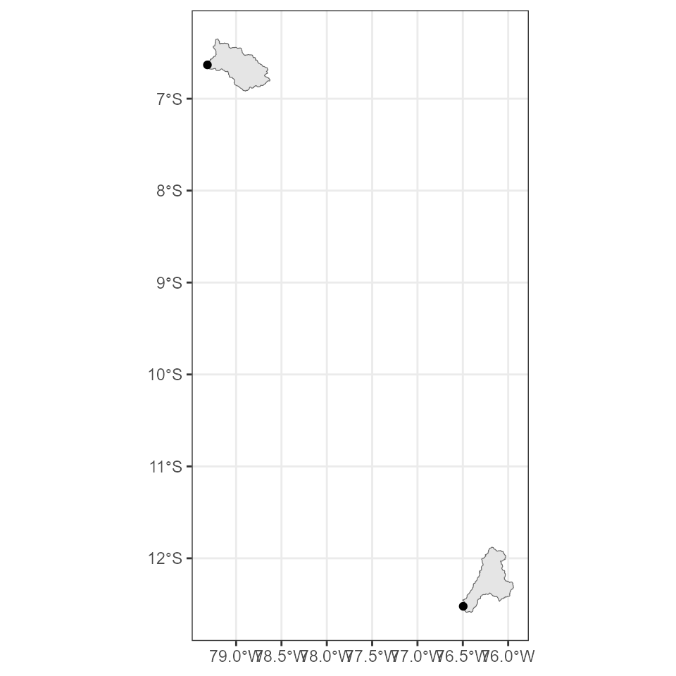
plot_catchments(catchments, gauges, gauge_id = gauge_id)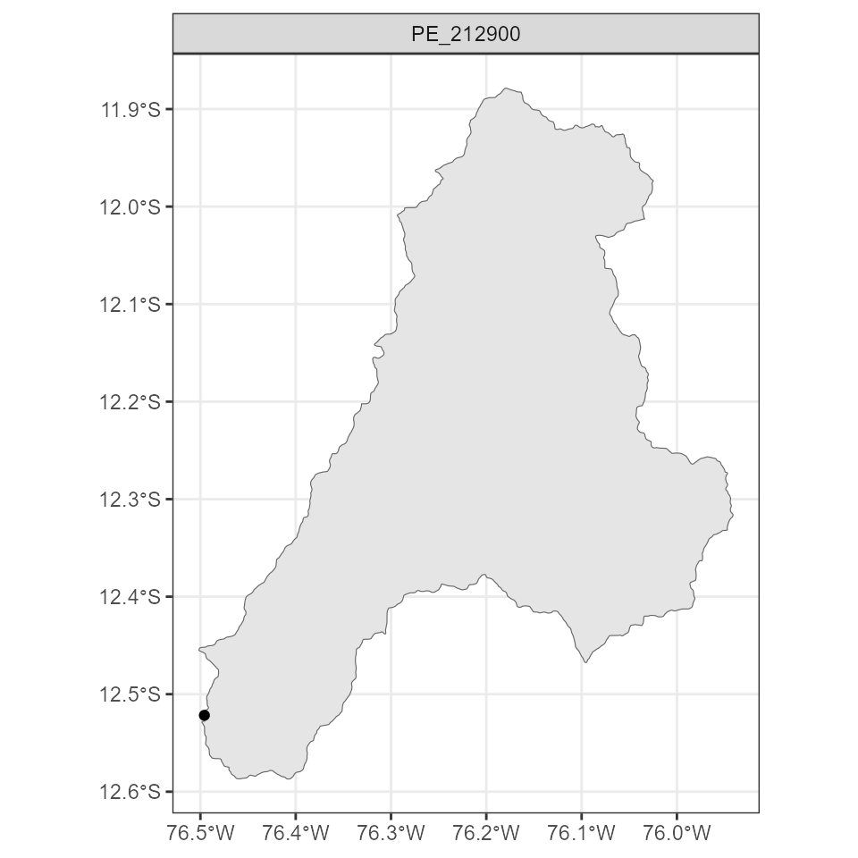
plot_attribute_map() colours the catchments by any
attribute (Sect. 5):
clim <- read_attributes("climatic")
plot_attribute_map(
catchments = catchments,
attributes = clim,
variable = "aridity",
gauges = gauges
)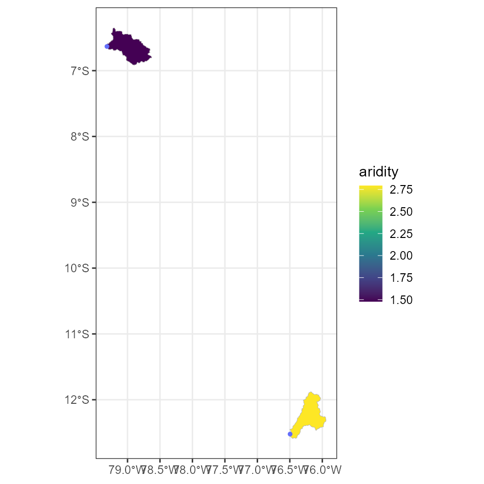
5. Catchment attributes
Static attributes are organized in thematic groups, read with
read_attributes(). All tables are keyed by
gauge_id and can be filtered with the gauge_id
argument.
Topography
read_attributes("topographic")
#> # A tibble: 2 × 8
#> gauge_id area perimeter elev_min elev_max elev_mean elev_median slope_mean
#> <chr> <dbl> <dbl> <dbl> <dbl> <dbl> <dbl> <dbl>
#> 1 PE_212900 2124. 277. 399. 5870. 3542. 3920. 507.
#> 2 PE_200907 2364. 266. 267. 4112. 2350. 2312. 407.Area and perimeter are in km2 and km, elevations in m a.s.l. and the mean slope in m/km.
Climate
Climatic indices are computed from 1981 to 2025 with the reference products only (PISCOp precipitation and Hargreaves-Samani PET). The alternative precipitation and PET products are provided as time series:
clim[, c("gauge_id", "p_mean", "pet_mean", "aridity")]
#> # A tibble: 2 × 4
#> gauge_id p_mean pet_mean aridity
#> <chr> <dbl> <dbl> <dbl>
#> 1 PE_212900 1.24 3.47 2.79
#> 2 PE_200907 2.44 3.60 1.48Seasonality and the frequency, duration and timing of high-precipitation and dry days:
clim[, c("gauge_id", "p_seasonality", "high_prec_freq", "high_prec_dur",
"high_prec_timing", "low_prec_freq", "low_prec_dur",
"low_prec_timing")]
#> # A tibble: 2 × 8
#> gauge_id p_seasonality high_prec_freq high_prec_dur high_prec_timing
#> <chr> <dbl> <dbl> <dbl> <chr>
#> 1 PE_212900 1.31 17.0 2.07 DJF
#> 2 PE_200907 0.714 11.7 1.60 MAM
#> # ℹ 3 more variables: low_prec_freq <dbl>, low_prec_dur <dbl>,
#> # low_prec_timing <chr>Hydrological signatures
Signatures are provided twice: computed from the observed streamflow
after quality control ("hydrological") and from the
simulated streamflow ("hydrological_sim"). The observed
signatures use only hydrological years with enough observations; the
columns q_obs_* give the period used.
hyd <- read_attributes("hydrological")
hyd_sim <- read_attributes("hydrological_sim")
hyd[, c("gauge_id", "q_mean", "runoff_ratio", "baseflow_index",
"q_obs_years", "q_obs_start", "q_obs_end")]
#> # A tibble: 2 × 7
#> gauge_id q_mean runoff_ratio baseflow_index q_obs_years q_obs_start q_obs_end
#> <chr> <dbl> <dbl> <dbl> <dbl> <date> <date>
#> 1 PE_2129… 0.68 0.54 0.573 33 1981-09-01 2025-08-31
#> 2 PE_2009… 1.30 0.538 0.631 42 1981-09-01 2023-08-31Both tables share the same column names, which makes it easy to compare observed and simulated signatures:
sig <- c("q_mean", "runoff_ratio", "baseflow_index", "Q5", "Q95",
"high_q_freq", "low_q_freq")
data.frame(
signature = sig,
observed = unlist(hyd[hyd$gauge_id == gauge_id, sig]),
simulated = unlist(hyd_sim[hyd_sim$gauge_id == gauge_id, sig]),
row.names = NULL
)
#> signature observed simulated
#> 1 q_mean 0.680 0.639
#> 2 runoff_ratio 0.540 0.513
#> 3 baseflow_index 0.573 0.595
#> 4 Q5 0.031 0.030
#> 5 Q95 2.787 2.638
#> 6 high_q_freq 72.854 79.432
#> 7 low_q_freq 178.887 182.386Land cover
Static land-cover attributes refer to the year 2024 (MapBiomas Peru,
Ecuador and Colombia). Glaciers and other water bodies are also given
separately
(water_perc = glacier_perc + water_body_perc):
read_attributes("land_cover")
#> # A tibble: 2 × 10
#> gauge_id forest_perc agricul_perc non_forest_perc non_veget_perc water_perc
#> <chr> <dbl> <dbl> <dbl> <dbl> <dbl>
#> 1 PE_212900 5.05 7.15 68.3 18.6 0.842
#> 2 PE_200907 22.5 49.7 24.0 3.55 0.243
#> # ℹ 4 more variables: non_identi_perc <dbl>, glacier_perc <dbl>,
#> # water_body_perc <dbl>, land_dominant_class <chr>The annual series from 1985 to 2024 are described in Sect. 6.
Geology and soils
geo <- read_attributes("geologic")
geo[, c("gauge_id", "geol_1st_class", "glim_1st_class_perc",
"geol_2nd_class", "glim_2nd_class_perc", "carbonate_rocks_perc",
"geol_porosity", "geol_permeability")]
#> # A tibble: 2 × 8
#> gauge_id geol_1st_class glim_1st_class_perc geol_2nd_class glim_2nd_class_perc
#> <chr> <chr> <dbl> <chr> <dbl>
#> 1 PE_2129… vi 71.1 pa 12.2
#> 2 PE_2009… vi 42.0 py 38.1
#> # ℹ 3 more variables: carbonate_rocks_perc <dbl>, geol_porosity <dbl>,
#> # geol_permeability <dbl>Soil attributes (DSOLMap, USDA Soil Taxonomy) give the percentage of
each soil order and the dominant order, suborder, great group and
texture class of each of the three horizons (h1 shallowest,
h3 deepest):
soil <- read_attributes("soil")
soil[, c("gauge_id", "soil_dominant_class", "soil_suborder_dominant_class",
"soil_great_group_dominant_class", "soil_texture_h1_dominant_class",
"soil_texture_h3_dominant_class")]
#> # A tibble: 2 × 6
#> gauge_id soil_dominant_class soil_suborder_dominant_…¹ soil_great_group_dom…²
#> <chr> <chr> <chr> <chr>
#> 1 PE_212900 inceptisols ochrepts cryochrepts
#> 2 PE_200907 ultisols udults tropudults
#> # ℹ abbreviated names: ¹soil_suborder_dominant_class,
#> # ²soil_great_group_dominant_class
#> # ℹ 2 more variables: soil_texture_h1_dominant_class <chr>,
#> # soil_texture_h3_dominant_class <chr>The percentages of all suborders, great groups and horizon texture
classes are read with read_soil_classes(), which adds the
names, order and suborder from the legend
(read_soil_legend()):
sub <- read_soil_classes(level = "suborder")
sub[sub$perc > 0, ]
#> # A tibble: 22 × 7
#> gauge_id level class name order suborder perc
#> <chr> <chr> <chr> <chr> <chr> <chr> <dbl>
#> 1 PE_212900 suborder udalfs Udalfs Alfisols NA 1.55
#> 2 PE_212900 suborder ustalfs Ustalfs Alfisols NA 1.46
#> 3 PE_212900 suborder argids Argids Aridisols NA 0.18
#> 4 PE_212900 suborder fluvents Fluvents Entisols NA 8.82
#> 5 PE_212900 suborder orthents Orthents Entisols NA 1.27
#> 6 PE_212900 suborder psamments Psamments Entisols NA 20.1
#> 7 PE_212900 suborder orthels Orthels Gelisols NA 0.07
#> 8 PE_212900 suborder ochrepts Ochrepts Inceptisols NA 66.2
#> 9 PE_212900 suborder orthox Orthox Oxisols NA 0.02
#> 10 PE_212900 suborder ustox Ustox Oxisols NA 0.02
#> # ℹ 12 more rowsWith format = "wide", one level is returned with one
column per class, for example the texture of the shallowest horizon:
read_soil_classes(level = "texture_h1", format = "wide")
#> # A tibble: 2 × 13
#> gauge_id sand_perc loamy_sand_perc sandy_loam_perc loam_perc silt_loam_perc
#> <chr> <dbl> <dbl> <dbl> <dbl> <dbl>
#> 1 PE_212900 0 0 24.9 66.4 0
#> 2 PE_200907 0 0 5.47 29.2 0
#> # ℹ 7 more variables: silt_perc <dbl>, sandy_clay_loam_perc <dbl>,
#> # clay_loam_perc <dbl>, silty_clay_loam_perc <dbl>, sandy_clay_perc <dbl>,
#> # silty_clay_perc <dbl>, clay_perc <dbl>The suborders and great groups follow the DSOLMap legend, which uses names of the USDA Soil Taxonomy prior to 1999 (e.g. Ochrepts). For the horizons, only the USDA texture class is provided.
Human intervention
Human intervention attributes describe accredited water availability (ADH, surface water and groundwater), reservoirs, tailings dams and whether the catchment can be considered near-natural:
human <- read_attributes("human_intervention")
human[, c("gauge_id", "surface_adh_mm", "groundwater_adh_mm", "adh_ratio",
"reservoir_n", "reservoir_dor", "tailings_dam_n", "near_natural")]
#> # A tibble: 2 × 8
#> gauge_id surface_adh_mm groundwater_adh_mm adh_ratio reservoir_n reservoir_dor
#> <chr> <dbl> <dbl> <dbl> <dbl> <dbl>
#> 1 PE_2129… 0.00418 0 0.615 5 0.417
#> 2 PE_2009… 0.000351 0.000436 0.0605 3 0.0267
#> # ℹ 2 more variables: tailings_dam_n <dbl>, near_natural <dbl>reservoir_dor (degree of regulation) and
adh_ratio are percentages of the mean annual observed
streamflow volume. near_natural (1 = no reservoirs, no
tailings dams and less than 10% of anthropic land cover) can be used to
select catchments with little human influence. Both sample catchments
have reservoirs, so neither is near-natural:
table(near_natural = human$near_natural)
#> near_natural
#> 0
#> 2All attributes in one table
type = "all" joins all groups by gauge_id
(the simulated signatures are excluded because they share column names
with the observed ones):
attrs <- read_attributes("all")
dim(attrs)
#> [1] 2 103This table is convenient for catchment classification or regionalization, for example to relate the runoff ratio to aridity:
attrs[, c("gauge_id", "aridity", "runoff_ratio", "baseflow_index",
"forest_perc", "near_natural")]
#> # A tibble: 2 × 6
#> gauge_id aridity runoff_ratio baseflow_index forest_perc near_natural
#> <chr> <dbl> <dbl> <dbl> <dbl> <dbl>
#> 1 PE_212900 2.79 0.54 0.573 5.05 0
#> 2 PE_200907 1.48 0.538 0.631 22.5 06. Annual land-cover series
CAMELS-PE includes the annual land cover of each catchment from 1985 to 2024, at two levels: six aggregated classes (the same as in the static attributes) and the MapBiomas subclasses.
Legend
The legend links each MapBiomas code to its subclass and class:
legend <- read_land_cover_legend()
head(legend, 10)
#> # A tibble: 10 × 5
#> mapbiomas_id class class_code subclass subclass_code
#> <int> <chr> <chr> <chr> <chr>
#> 1 3 Forest formation forest Forest Formation forest_forma…
#> 2 4 Forest formation forest Dry forest dry_forest
#> 3 5 Forest formation forest Mangrove mangrove
#> 4 6 Forest formation forest Flooded forest flooded_fore…
#> 5 9 Agricultural area agricul Planted forest planted_fore…
#> 6 15 Agricultural area agricul Pasture pasture
#> 7 21 Agricultural area agricul Mosaic of agricultur… mosaic_agri_…
#> 8 35 Agricultural area agricul Oil palm oil_palm
#> 9 40 Agricultural area agricul Rice rice
#> 10 72 Agricultural area agricul Other crops other_cropsClasses
lc_class <- read_land_cover(level = "class", gauge_id = gauge_id)
head(lc_class)
#> # A tibble: 6 × 9
#> gauge_id year forest_perc agricul_perc non_forest_perc non_veget_perc
#> <chr> <int> <dbl> <dbl> <dbl> <dbl>
#> 1 PE_212900 1985 9.44 2.55 65.6 20.7
#> 2 PE_212900 1986 10.4 4.60 63.1 20.5
#> 3 PE_212900 1987 9.32 5.04 63.4 21.0
#> 4 PE_212900 1988 6.33 6.65 65.5 20.3
#> 5 PE_212900 1989 6.33 7.33 65.4 19.7
#> 6 PE_212900 1990 6.21 7.07 65.8 19.7
#> # ℹ 3 more variables: water_perc <dbl>, non_identi_perc <dbl>,
#> # land_dominant_class <chr>
plot_land_cover(lc_class)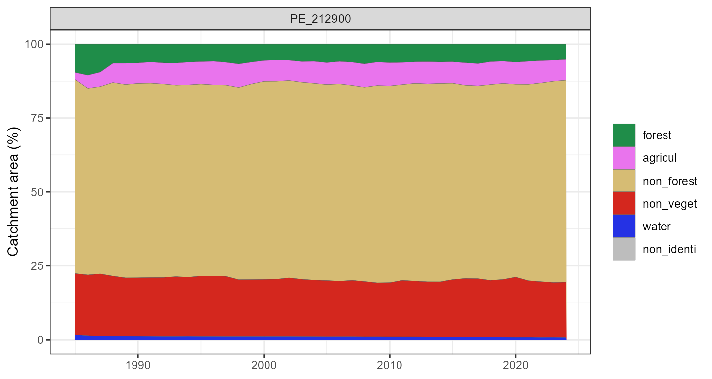
Subclasses
The long format returns one row per catchment, year and subclass, with the names from the legend:
lc_sub <- read_land_cover(
level = "subclass",
gauge_id = gauge_id,
format = "long"
)
head(lc_sub)
#> # A tibble: 6 × 8
#> gauge_id year subclass_code subclass class_code class mapbiomas_id perc
#> <chr> <int> <chr> <chr> <chr> <chr> <int> <dbl>
#> 1 PE_212900 1985 forest_formation Forest F… forest Fore… 3 9.43
#> 2 PE_212900 1985 dry_forest Dry fore… forest Fore… 4 0.017
#> 3 PE_212900 1985 mangrove Mangrove forest Fore… 5 0
#> 4 PE_212900 1985 flooded_forest Flooded … forest Fore… 6 0
#> 5 PE_212900 1985 planted_forest Planted … agricul Agri… 9 0
#> 6 PE_212900 1985 pasture Pasture agricul Agri… 15 0Subclasses that never exceed a given percentage of the catchment can be grouped as “Other”:
plot_land_cover(lc_sub, min_perc = 1)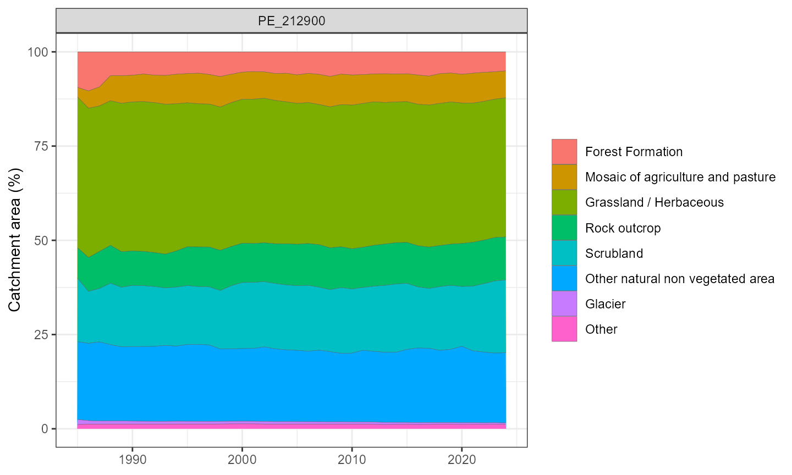
Land-cover change
With the long format, the change between two years is easy to compute:
lc_change <- read_land_cover(
level = "subclass",
years = c(1985, 2024),
format = "long"
)
change <- reshape(
as.data.frame(lc_change[, c("gauge_id", "subclass", "year", "perc")]),
idvar = c("gauge_id", "subclass"),
timevar = "year",
direction = "wide"
)
change$diff <- change$perc.2024 - change$perc.1985
# Largest changes (percentage points of the catchment area)
change <- change[order(-abs(change$diff)), ]
head(change, 8)
#> gauge_id subclass perc.1985 perc.2024 diff
#> 65 PE_212900 Mosaic of agriculture and pasture 2.549 7.148 4.599
#> 59 PE_212900 Forest Formation 9.427 5.040 -4.387
#> 7 PE_200907 Mosaic of agriculture and pasture 43.928 47.482 3.554
#> 71 PE_212900 Rock outcrop 8.040 11.387 3.347
#> 69 PE_212900 Grassland / Herbaceous 40.005 36.908 -3.097
#> 72 PE_212900 Scrubland 16.860 19.345 2.485
#> 82 PE_212900 Other natural non vegetated area 20.655 18.592 -2.063
#> 5 PE_200907 Planted forest 3.837 2.031 -1.8067. Daily time series
Available variables
ts_dict <- read_dictionary(file = "timeseries.csv")
ts_dict[, c("variable", "unit", "source")]
#> # A tibble: 21 × 3
#> variable unit source
#> <chr> <chr> <chr>
#> 1 date YYYY-MM-DD -
#> 2 gauge_id - SENAMHI
#> 3 prec_pisco mm/day PISCOp v3.0
#> 4 prec_sd_pisco mm/day PISCOp v3.0
#> 5 prec_chirps mm/day CHIRPS v3 (daily, RNL)
#> 6 prec_era5land mm/day ERA5-Land
#> 7 pet_hs mm/day Hargreaves-Samani (FAO-56 Eq. 52) from PISCOt v1.2
#> 8 pet_pt mm/day PISCOt v1.2 and ERA5-Land
#> 9 pet_ou mm/day PISCOt v1.2
#> 10 tmin degC PISCOt v1.2
#> # ℹ 11 more rowsThe time series include:
-
precipitation from three products:
prec_pisco(PISCOp v3.0, reference),prec_chirps(CHIRPS v3) andprec_era5land(ERA5-Land), plus the spatial standard deviation of PISCOp within the catchment (prec_sd_pisco); -
potential evapotranspiration from three
formulations:
pet_hs(Hargreaves-Samani, reference),pet_pt(Priestley-Taylor) andpet_ou(Oudin); -
temperature (
tmin,tmean,tmax), solar radiation (srad) and vapour pressure (vprp); -
observed streamflow after quality control
(
flow_obs,flow_obs_m3s), before quality control (flow_obs_raw) and its quality-control flag and test (flow_obs_flag,flow_obs_qc_test); -
simulated streamflow (
flow_sim,flow_sim_m3s).
Reading modes
The recommended mode reads one file per catchment, so only the requested catchments are loaded:
ts <- read_timeseries(gauge_id = gauge_id)
dim(ts)
#> [1] 365 21The global mode reads timeseries.csv, which contains all
catchments. With vars, only the requested columns are read,
which saves time and memory with the full dataset:
ts_global <- read_timeseries(
global = TRUE,
vars = c("date", "gauge_id", "prec_pisco", "flow_obs")
)
head(ts_global)
#> # A tibble: 6 × 4
#> date gauge_id prec_pisco flow_obs
#> <date> <chr> <dbl> <dbl>
#> 1 1981-01-01 PE_200907 0.027 0.492
#> 2 1981-01-02 PE_200907 0.899 0.462
#> 3 1981-01-03 PE_200907 1.48 0.437
#> 4 1981-01-04 PE_200907 0.203 0.580
#> 5 1981-01-05 PE_200907 0.169 0.475
#> 6 1981-01-06 PE_200907 0.585 0.450Both modes accept several gauges and a selection of variables:
ts_multi <- read_timeseries(
gauge_id = stations$gauge_id,
vars = c("date", "gauge_id", "prec_pisco", "pet_hs", "flow_obs")
)
table(ts_multi$gauge_id)
#>
#> PE_200907 PE_212900
#> 365 365plot_timeseries() plots one variable, with one panel per
gauge:
plot_timeseries(ts_multi, variable = "prec_pisco", linewidth = 0.4)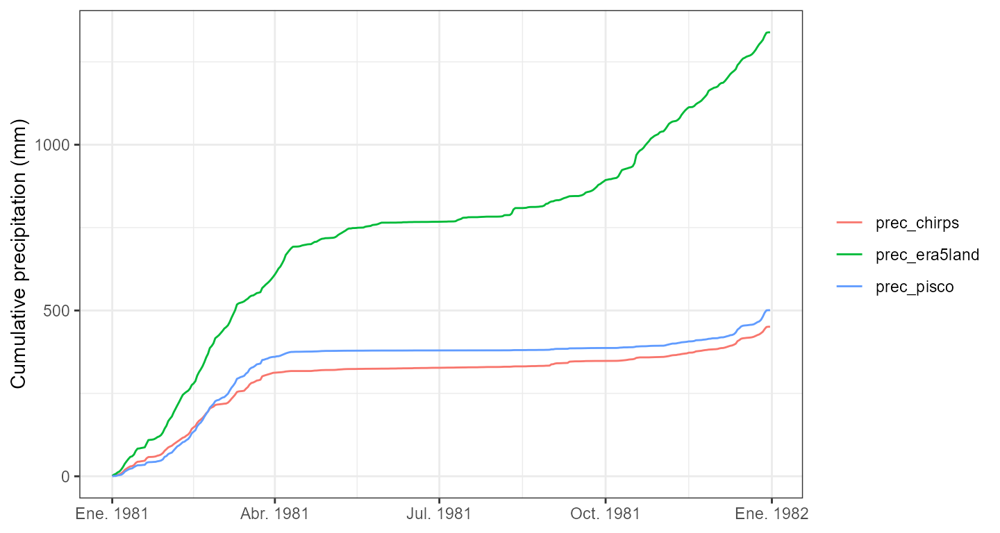
8. Meteorological forcing
Precipitation products
The three precipitation products can be compared directly:
prec_cols <- c("prec_pisco", "prec_chirps", "prec_era5land")
colSums(ts[, prec_cols], na.rm = TRUE)
#> prec_pisco prec_chirps prec_era5land
#> 500.937 451.056 1338.894Cumulative precipitation shows where the products diverge:
prec_long <- stack_columns(ts, prec_cols)
prec_long$value[is.na(prec_long$value)] <- 0
prec_long$cumulative <- ave(prec_long$value, prec_long$variable, FUN = cumsum)
ggplot(prec_long, aes(date, cumulative, colour = variable)) +
geom_line() +
labs(x = NULL, y = "Cumulative precipitation (mm)", colour = NULL) +
theme_bw()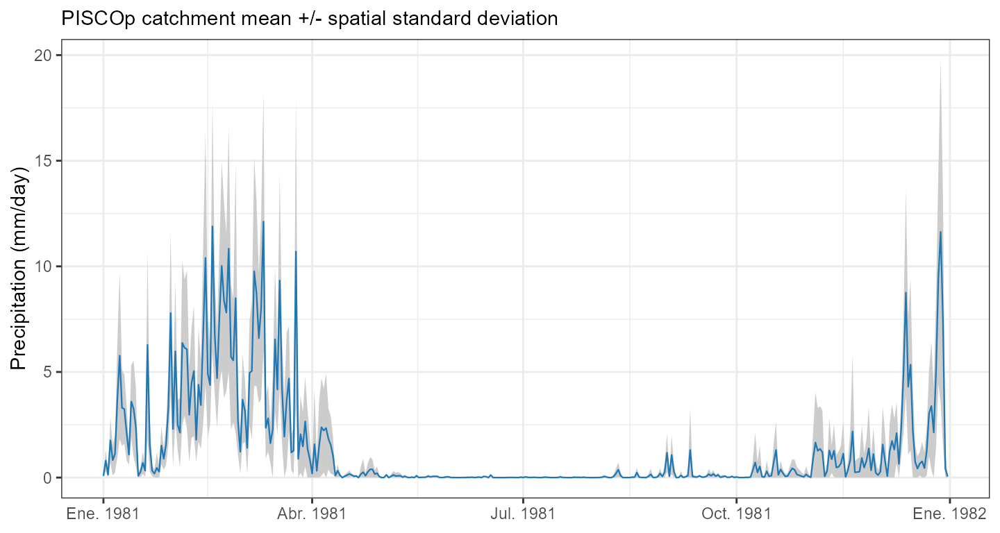
Monthly totals of each product:
prec_long$month <- as.Date(format(prec_long$date, "%Y-%m-01"))
prec_month <- aggregate(value ~ month + variable, data = prec_long, FUN = sum)
ggplot(prec_month, aes(month, value, fill = variable)) +
geom_col(position = "dodge") +
labs(x = NULL, y = "Monthly precipitation (mm)", fill = NULL) +
theme_bw()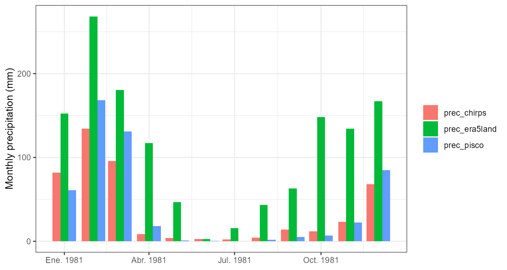
The spatial standard deviation of PISCOp (prec_sd_pisco)
describes how variable precipitation is within the catchment on each
day:
ggplot(ts, aes(date)) +
geom_ribbon(
aes(ymin = pmax(prec_pisco - prec_sd_pisco, 0),
ymax = prec_pisco + prec_sd_pisco),
fill = "grey80"
) +
geom_line(aes(y = prec_pisco), colour = "#1f78b4", linewidth = 0.4) +
labs(x = NULL, y = "Precipitation (mm/day)",
subtitle = "PISCOp catchment mean +/- spatial standard deviation") +
theme_bw()
Potential evapotranspiration
The three PET formulations differ mainly in their level:
pet_cols <- c("pet_hs", "pet_pt", "pet_ou")
colMeans(ts[, pet_cols], na.rm = TRUE)
#> pet_hs pet_pt pet_ou
#> 3.410310 4.163825 2.429370
pet_long <- stack_columns(ts, pet_cols)
ggplot(pet_long, aes(date, value, colour = variable)) +
geom_line(linewidth = 0.4) +
labs(x = NULL, y = "PET (mm/day)", colour = NULL) +
theme_bw()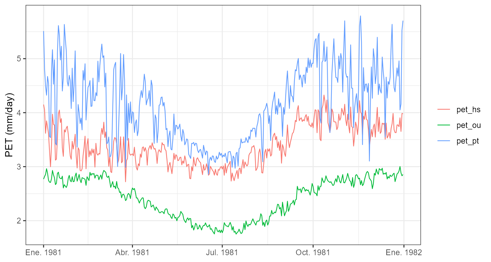
The choice of the precipitation product and of the PET formulation changes the aridity index (PET / P). For the sample year:
Temperature, radiation and vapour pressure
temp_long <- stack_columns(ts, c("tmin", "tmean", "tmax"))
ggplot(temp_long, aes(date, value, colour = variable)) +
geom_line(linewidth = 0.4) +
scale_colour_manual(values = c(tmin = "#2c7bb6", tmean = "grey30",
tmax = "#d7191c")) +
labs(x = NULL, y = "Air temperature (degrees C)", colour = NULL) +
theme_bw()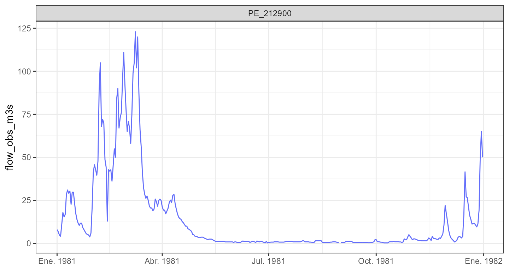
plot_timeseries(ts, variable = "srad")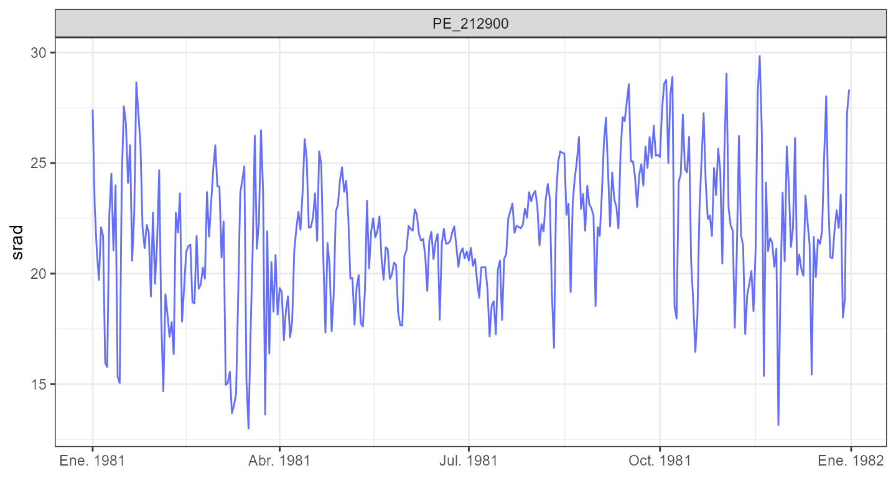
plot_timeseries(ts, variable = "vprp")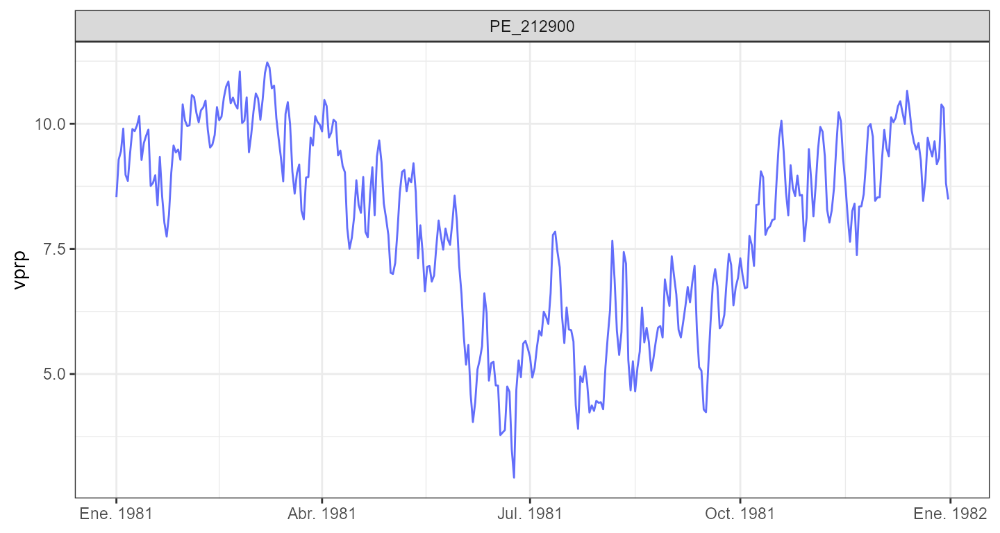
9. Observed streamflow and quality control
Units
Streamflow is given in mm/day
(flow_obs, flow_sim), which allows the
comparison of catchments of different size and with precipitation and
PET, and in m3/s (flow_obs_m3s,
flow_sim_m3s):
plot_timeseries(ts, variable = "flow_obs_m3s")
Quality-control flags
The observed streamflow went through an automatic quality control based on the QARTOD tests (gross range, spike, flat line and detection of linearly interpolated values). Each daily value has a flag:
flow_obs_flag |
Meaning |
|---|---|
| 1 | pass |
| 3 | suspect: kept in flow_obs, but worth checking |
| 4 | fail: removed from flow_obs (set to NA),
kept in flow_obs_raw
|
| 9 | missing |
flow_obs_qc_test names the test that raised the flag
(only for flags 3 and 4), for example flat_line_suspect
(constant values during 7 to 30 days) or flat_line (more
than 30 days, removed).
table(flag = ts$flow_obs_flag, useNA = "ifany")
#> flag
#> 1 3 9
#> 342 22 1
table(test = ts$flow_obs_qc_test, useNA = "ifany")
#> test
#> flat_line_suspect <NA>
#> 22 343Plot the flagged values on top of the series:
flags <- ts[ts$flow_obs_flag %in% c(3, 4), ]
flags$flag <- factor(flags$flow_obs_flag, levels = c(3, 4),
labels = c("suspect (3)", "fail (4)"))
ggplot(ts, aes(date, flow_obs_raw)) +
geom_line(colour = "grey40", linewidth = 0.4) +
geom_point(
data = flags,
aes(colour = flag),
size = 1.2
) +
scale_colour_manual(values = c("suspect (3)" = "#fdae61",
"fail (4)" = "#d7191c"),
drop = FALSE) +
labs(x = NULL, y = "Observed streamflow (mm/day)", colour = NULL) +
theme_bw()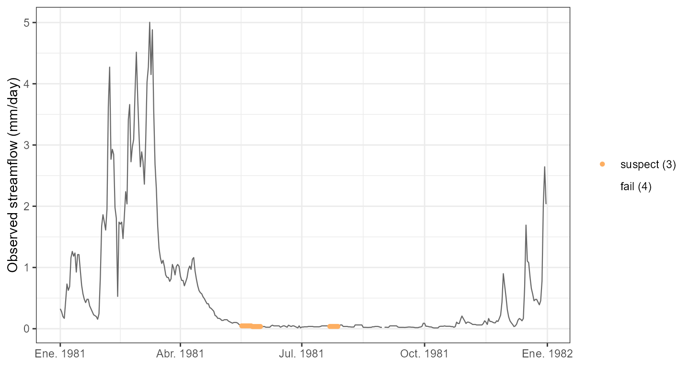
Using the flags
flow_obs is ready to use: values that failed are already
removed. Users who prefer a stricter selection can also remove suspect
values:
ts$flow_obs_strict <- ifelse(ts$flow_obs_flag == 1, ts$flow_obs, NA)
c(
flow_obs = sum(!is.na(ts$flow_obs)),
flow_obs_strict = sum(!is.na(ts$flow_obs_strict))
)
#> flow_obs flow_obs_strict
#> 364 342The original record is kept in flow_obs_raw, so the
effect of the quality control can always be checked:
changed <- which(ts$flow_obs_raw != ts$flow_obs |
(is.na(ts$flow_obs) & !is.na(ts$flow_obs_raw)))
length(changed)
#> [1] 0For the full dataset, the number of suspect and failed values per gauge is summarized in the station table (Sect. 3).
10. Observed and simulated streamflow
Simulated streamflow is available for all catchments and days, also where observations are missing:
q_long <- stack_columns(ts, c("flow_obs", "flow_sim"))
ggplot(q_long, aes(date, value, colour = variable)) +
geom_line(linewidth = 0.4) +
scale_colour_manual(values = c(flow_obs = "black", flow_sim = "#e31a1c")) +
labs(x = NULL, y = "Streamflow (mm/day)", colour = NULL) +
theme_bw()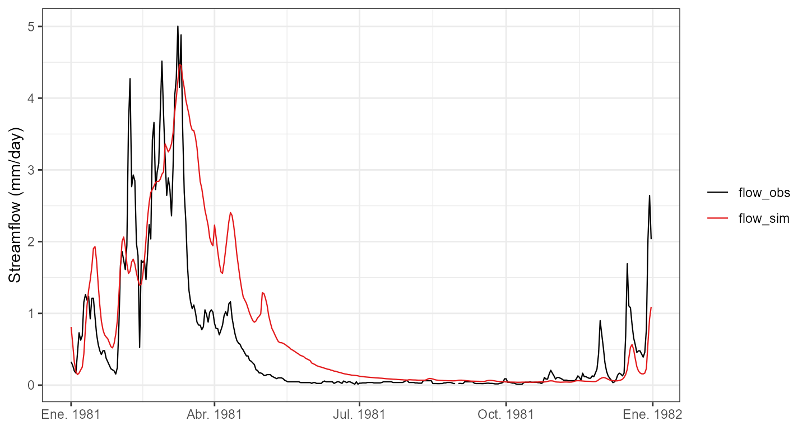
Performance of the simulation on the days with observations, for example with the Nash-Sutcliffe and Kling-Gupta efficiencies:
ok <- !is.na(ts$flow_obs) & !is.na(ts$flow_sim)
obs <- ts$flow_obs[ok]
sim <- ts$flow_sim[ok]
nse <- 1 - sum((sim - obs)^2) / sum((obs - mean(obs))^2)
kge <- 1 - sqrt((cor(sim, obs) - 1)^2 +
(sd(sim) / sd(obs) - 1)^2 +
(mean(sim) / mean(obs) - 1)^2)
round(c(NSE = nse, KGE = kge), 3)
#> NSE KGE
#> 0.533 0.58511. A simple water balance
Because precipitation, PET and streamflow are all in mm/day, a water balance can be computed directly. Using only the days with observed streamflow:
ok <- !is.na(ts$flow_obs)
balance <- data.frame(
product = prec_cols,
P = colMeans(ts[ok, prec_cols]),
Q = mean(ts$flow_obs[ok]),
row.names = NULL
)
balance$runoff_ratio <- balance$Q / balance$P
balance$aridity <- mean(ts$pet_hs[ok]) / balance$P
balance
#> product P Q runoff_ratio aridity
#> 1 prec_pisco 1.375481 0.5634122 0.4096111 2.4793629
#> 2 prec_chirps 1.238451 0.5634122 0.4549332 2.7536957
#> 3 prec_era5land 3.667580 0.5634122 0.1536196 0.9298546A runoff ratio close to or above 1 points to an underestimation of precipitation by the product, a common issue in high mountain catchments.
12. Typical workflow with the full dataset
library(RCamelsPE)
# Download once, or set the path of a local copy
# download_camels_pe(path = "path/to/folder")
set_camels_path("path/to/CAMELS-PE")
# Select near-natural catchments in the Pacific region
stations <- read_metadata()
attrs <- read_attributes("all")
sel <- attrs$gauge_id[attrs$near_natural == 1]
sel <- intersect(sel, stations$gauge_id[stations$gauge_region == "Pacific"])
# Read their forcing and streamflow
ts <- read_timeseries(
gauge_id = sel,
vars = c("date", "gauge_id", "prec_pisco", "prec_chirps",
"prec_era5land", "pet_hs", "flow_obs", "flow_obs_flag")
)
# Annual land-cover change in the selected catchments
lc <- read_land_cover("class", gauge_id = sel, format = "long")
plot_land_cover(lc)Summary
| Function | Purpose |
|---|---|
download_camels_pe() |
Download the dataset from Zenodo |
set_camels_path() |
Define the location of the dataset |
read_dictionary() |
Variable descriptions, units and sources |
read_metadata() |
Station metadata and quality-control summary |
read_geospatial() |
Catchment boundaries and gauge locations |
read_attributes() |
Static catchment attributes |
read_land_cover() |
Annual land-cover series (class or subclass) |
read_land_cover_legend() |
Land-cover legend |
read_soil_classes() |
Soil suborders, great groups, horizon textures |
read_soil_legend() |
Soil legend |
read_timeseries() |
Daily time series |
plot_timeseries() |
Time series plot |
plot_catchments() |
Map of catchments and gauges |
plot_attribute_map() |
Map of an attribute |
plot_land_cover() |
Annual land-cover plot |
To run this tutorial with the full dataset, download CAMELS-PE with
download_camels_pe() or from Zenodo, and define its
location with set_camels_path().